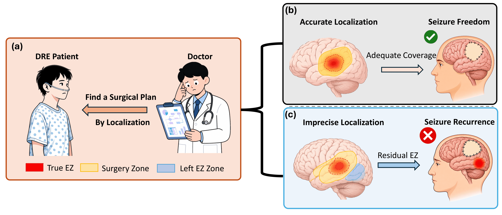
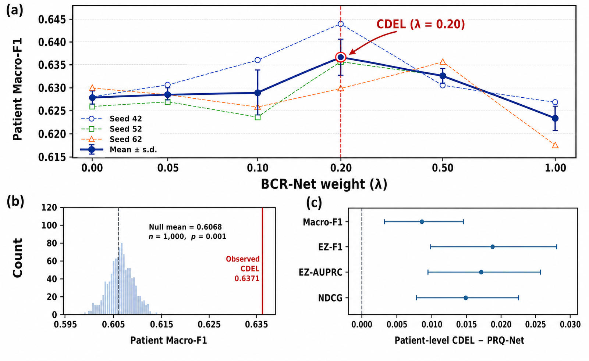
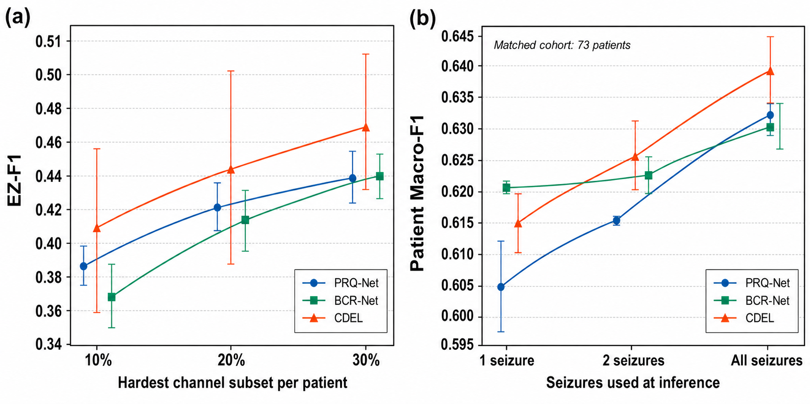

Patient-relative evidence
Each channel is interpreted relative to its own pre-onset reference and to the other implanted channels from the same patient.
Drug-resistant epilepsy remains a major clinical challenge because successful surgery depends on accurate localization of the epileptogenic zone (EZ). Existing intracranial EEG methods often learn global channel-wise decision rules that obscure patient-specific abnormalities and become unstable under severe class imbalance and heterogeneous clinical acquisition.
We present EpiLENS, a primary-guided asymmetric dual-branch framework for patient-relative EZ localization. Its Conservative Dual-Evidence Localization strategy combines stable patient-relative probabilities from PRQ-Net with complementary boundary-aware ranking evidence from BCR-Net.

EpiLENS organizes multi-center SEEG and ECoG recordings by patient, seizure, channel, and temporal window. Nine spectral and waveform descriptors are converted into four self-referenced views: absolute features, reference differences, standardized deviations, and log-relative ratios.

Each channel is interpreted relative to its own pre-onset reference and to the other implanted channels from the same patient.
PRQ-Net emphasizes seizure-consistent deviations. BCR-Net emphasizes ambiguous EZ/NEZ boundaries and recovery of the annotated EZ set.
CDEL retains PRQ-Net as the primary branch and uses the locked rule 0.8 PRQ-Net + 0.2 BCR-Net without patient-specific thresholds.
Evaluation uses fixed patient-wise five-fold outer splits across 80 postoperative seizure-free patients from four centers, comprising 256 seizures and 7,635 implanted channels. Metrics are computed for each patient and then macro-averaged. Macro-F1 is the primary endpoint.
| Method | Macro-F1 ↑ | EZ-F1 ↑ | AUROC ↑ | EZ-frac. bias → 0 |
|---|---|---|---|---|
| Logistic + patient-wise z-score | 0.6065 | 0.3988 | 0.6835 | -0.0138 |
| PRQ-Net | 0.6282 | 0.4299 | 0.7416 | -0.0097 |
| BCR-Net | 0.6248 | 0.4303 | 0.7392 | +0.0040 |
| CDEL | 0.6371 | 0.4485 | 0.7468 | +0.0034 |
Mean across three seeds. CDEL improves Macro-F1 by 0.0306 over the strongest retained baseline while maintaining near-zero EZ-fraction bias.
The locked BCR-Net weight of 0.20 is stable across seeds. Within-patient permutation testing rejects generic score smoothing as the explanation for the fusion gain, and patient-level bootstrap intervals remain above zero for all four reported endpoints.

CDEL's improvement concentrates on difficult channels near the PRQ-Net decision boundary. Performance also rises as additional seizures are incorporated under frozen checkpoints, fusion weights, and validation thresholds, supporting the use of repeated within-patient evidence.

The repository contains PRQ-Net, BCR-Net, the locked CDEL fusion, component and sensitivity analyses, cross-seizure and leave-one-center-out evaluation, and the strongest reported baseline: logistic regression with label-free patient-wise z-score normalization.
Raw clinical recordings and confidential patient annotations are not distributed. The code defines an anonymized patient-record contract and validates fixed patient-wise partitions before training.
@article{gong2026epilens,
title = {EpiLENS: Patient-Relative Epileptogenic Zone Localization from Multi-Center Intracranial EEG},
author = {Gong, Yuanchu and Yan, Zibo and Lyu, Yibo and Chen, Chen and Chan, Sixian and Wang, Yalin},
journal = {arXiv preprint arXiv:2608.01076},
year = {2026},
doi = {10.48550/arXiv.2608.01076}
}